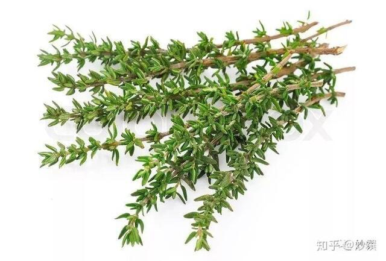
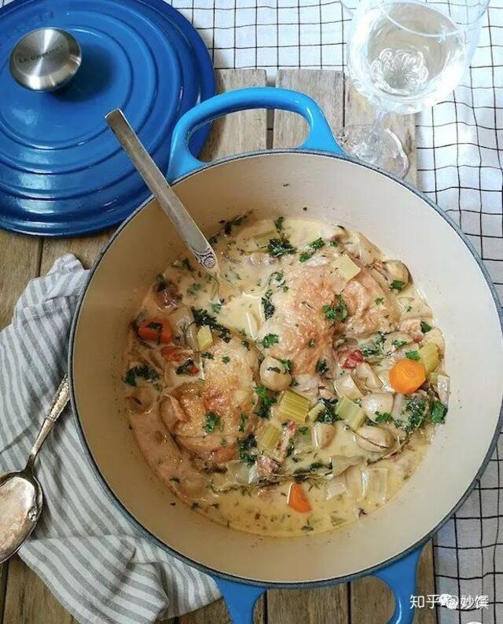
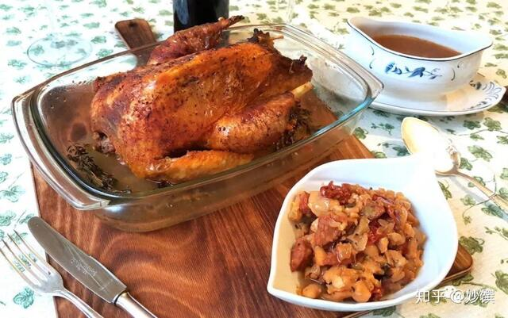

又名麝香草，意大利、法国、希腊、中东等国家用得很多。它的香气温和，能与别的香草和谐同存。

▲新鲜百里香，图源自网络。
几乎炖煮任何禽类、猪牛羊、海鲜还有蔬菜料理时，都可以加入一两枝百里香，只要你喜欢它的味道。但它需要慢慢加热才能散发香味，香气慢慢渗透进料理中，所以用到百里香的时候要一开始就放。
百里香、欧芹的茎和月桂叶的组合在法文里叫“Bouquet Garni”，即香草束。把3种新鲜香草用棉绳绑在一起，整束放入锅中增香，炖好了再一次取出。
有一阵子我常做百里香炖鸡汤：取鸡的琵琶腿，加樱桃番茄，洋葱共煮，鸡腿断生后撕下肉，鸡肉和骨回锅，放入百里香的花蕊，磨上黑胡椒，文火煨半小时，末了撒一把青豆，磨入海盐调味。清爽甘甜，好喝！这锅汤也一举拿下家里不爱吃鸡的那位。
气味：甘甜温和，略带辛香，中国人比较能接受。
回顾：
coffee cat的晚餐：法式白酒炖鸡，有百里香和别的香草。

▲ 之后会上这个食谱
coffee cat 去年的新年餐：填馅烤鸡。
想跟它叙旧的，戳上方蓝色链接。

▲鸡肚子里塞了些百里香和炒过的馅料
应用：肉类的炖菜和烤制，经得起长时间烹调；也适用快煎，比如煎猪排，煎鱼；腌肉腌鱼；做烤鸡填馅；汤品。